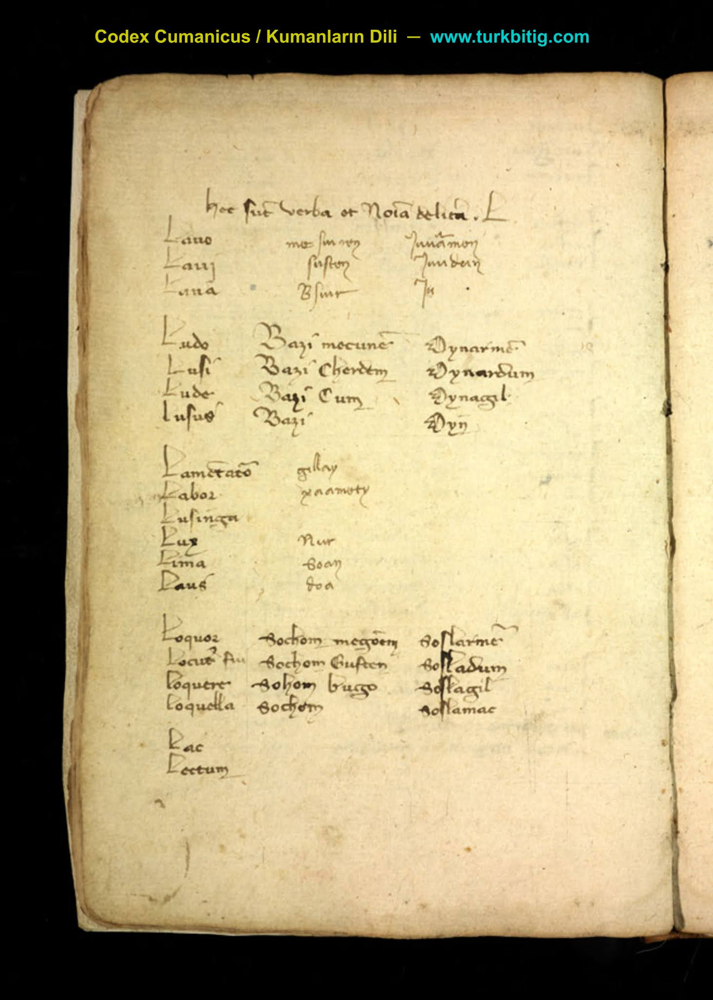
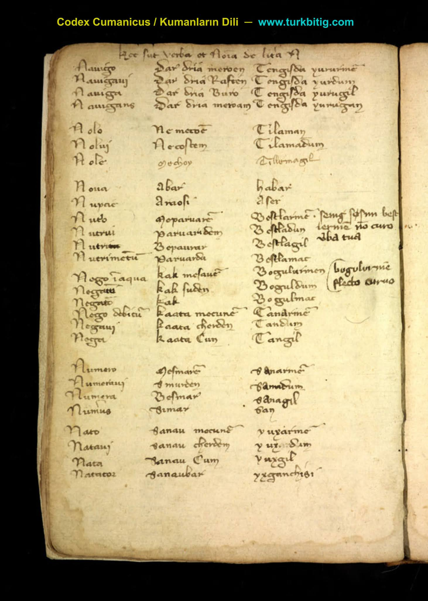
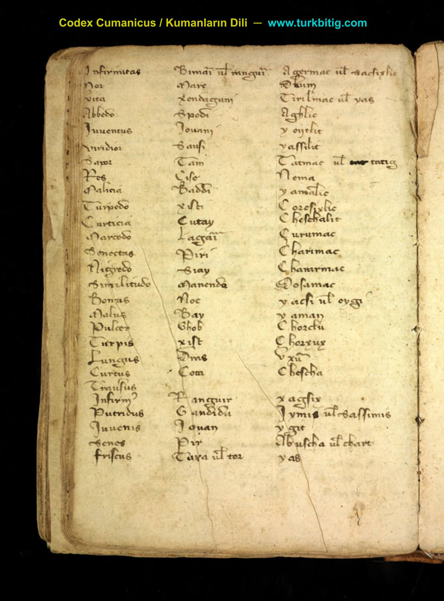

Codex Cumanicus
Codex Cumanicus, Kuman Türkleri Dili ─ Aslı Italyada (Vatikan Nüshası), bir kısmı Almanyada bulunan Kuman Türklerinin Sözlüğüdür.
Kumanlar, 11. yüzyıl ile 14. yüzyıl arasında Doğu Avrupa’da (Karadenizin kuzeyinde) yaşamış bir Türk halkıdır. Tarihte Kıpçaklar, Kuman-Kıpçak (Deşt-i Kıpçak) hanlığını kurmuşlardır.
Codex Cumanicus, Ortaçağ dönemi Türk kültürü ve edebiyatı için önemli bir kaynaktır. Bu belge, Kıpçak Türkçesi ile yazılmış bir dilbilgisi ve sözlük kitabıdır ve Cuman (Kuman) Türkleri'nin dilini anlamak için önemli bir kaynak olarak kabul edilir.
Codex Cumanicus, Kuman Türkleri'nin dilini Latin alfabesi ile yazılmış bir dilbilgisi ve sözlük olarak sunar. Kitapta, Kuman Türkçesi'nin dil yapısı, gramer kuralları, kelime dağarcığı ve cümle yapıları açıklanmaktadır. Kitapta yer alan kelime ve cümle yapıları, Türk dilinin tarih öncesi dönemlerindeki gelişimini anlamak için önemlidir. Kitap, Türk kültürü ve edebiyatı için de önemlidir. Kitapta yer alan şiir ve hikayeler, Kuman Türkleri'nin edebiyatı ve kültürü hakkında bizlere bilgi verir.






